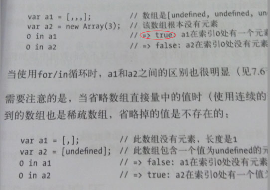

平安夜逛社区的时候，有一位同学就犀牛书上对稀疏数组的解读提出了质疑，这里贴上犀牛书 147 页的截图：

上面应该能很清楚看到一个红圈圈着的 true，犀牛书认为稀疏数组 a1 在索引 0 处有一个元素，而事实是在最新的浏览器下，0 in a1 的返回值都是 false 了。这个问题顺带把数组空位给扯出来了，我和王同学在一番引诱下对其展开了研究。
首先要知道犀牛书遵从的是 es5 标准，而现在主流浏览器都开始遵从 es6 标准了。那么 es6 对数组空位作了哪些改动呢？
var a1 = [,,,];
0 in a1; // false
a1.length; // 3
可以看到 0 in a1 返回 false 了，这是因为 es6 不再将空位当成 undefined 了，同时 a1.length 的值是 3 而不是 4 了，在 es5 中稀疏数组的 length 属性值大于元素的个数，es6 则变得更容易理解：length = 索引数 = 空位数
再来看看 for...of 循环:
const arr = [,,,];
for (let i of arr) {
console.log('yes');
}
// yes
// yes
// yes
可以看到 for...of 并没有跳过空位,而 es5 则会跳过空位。同时在使用 forEach()、filter()、some() 方法的时候 es5 会跳过空位，而 es6 则会明确地将空位转为 undefined。